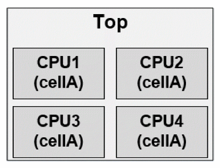
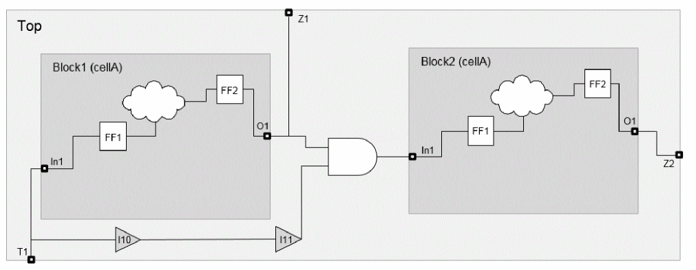

Hierarchical ECO Optimization
Very large netlists are usually not implemented flat since the memory usage and runtime would be too large to be productive. In such a case, you apply a hierarchical flow methodology, either bottom-up or top-down, where the top-level netlist and the block-level netlist are implemented in parallel. Once those independent netlists are implemented, you have to assemble the design for full-flat signoff timing analysis, meaning the entire design is timed. Most of the time this full flat signoff timing analysis will reveal timing violations on the timing path between top-level and partitions, or even only between partitions. This can be explained by the fact that the input/output timing constraints at the block level never model the required time from the top level perfectly, but also because at the top level, each partition is represented by a timing model, which is also never fully accurate. To fix those timing violations, run the Tempus ECO feature to perform hierarchical chip finishing.
In a hierarchical design, you can optimize timing only at the top level, or on the top-level and block-level netlists. You can apply the dont_touch attribute on the modules that should not be touched by ECO fixing. The output of the eco_opt_design command is an ECO file for the top level and for each identified partition, so you can go back and implement those ECOs in each respective netlists.
In a hierarchical design, buffering occurs in logical and physical hierarchy-aware modes. This also implies that the partitions' interface remains unchanged.
To perform hierarchical chip finishing in Tempus, there are two main phases that need to be correctly set up:
-
Assembling the design
First, the top-level and all block-level Verilog must be loaded in Tempus. Then, the merge_hierarchical_def command will merge the top-level DEF and all the block-level DEF files. Next, the
read_spefcommand loads the top-level SPEF and all block-level SPEFs for every corner. -
Specifying which modules should be treated as partitions
In order for the tool to know which modules should be treated as partitions, you have to provide the list of those module cells through an external file. This is done using set_eco_opt_mode
–partition_list_filefile.
Sample Script for Hierarchical Flow
read_lib $libertyread_view_definition viewDefinition.tclread_verilog "my_top.v pnt1.v pnt2.v"set_top_module my_topsource timing_settings_and_derating.tcl
merge_hierarchical_def "my_top.def pnt1.def pnt2.def"read_spef -rc_corner rc_max "my_top_max.spef ptn1_max.spef ptn2_max.spef"
read_spef -rc_corner rc_min1 "my_top_min1.spef ptn1_min1.spef ptn2_min1.spef"
read_spef -rc_corner rc_min2 "my_top_min2.spef ptn1_min2.spef ptn2_min2.spef"
set_eco_opt_mode -buffer_cell_list "BUFX1 BUFX2 BUFX8 DLYX1 DLYX4"
set_eco_opt_mode -load_eco_opt_db myECODB
set_eco_opt_mode -partition_list_file partition.txt
eco_opt_design -hold
set_eco_opt_mode –load_eco_opt_db since eco_opt_design cannot do it in batch mode for hierarchical designs.Optimization of Master/Clone Designs
The intent of the Master/Clone design methodology is to build common blocks once and instantiate them multiple times. It is also called a hierarchical implementation with Master/Clones. This methodology allows duplicated functionality within a chip to be built and verified once, and then instantiated multiple times, thus reducing workload and data storage. Keeping a non-unique netlist makes it easier to assess the scope and breadth of late logic changes. The logic changes would then be limited to a subset of the chip, reducing the critical path turnaround time and amount of re-verification required to achieve final signoff.
A cloned block is implemented so that it can operate in the worst-case corner scenario in any of its instantiation but once assembled at its top level, the full flat STA might reveal new timing violations. Master/Clone timing optimization is needed because each clone can have:
- Different physical environments (such as different IO loads )
- Different timing environments (such as a change in clock slew/skew/OCV between blocks and flat)
- Different signal integrity environments
The Master/Clone timing optimization capability in Signoff ECO can fix timing violations and optimize timing in the replicated modules, while earlier those would have been treated as dont_touch. Any netlist change will be checked against each clone’s timing and physical context to ensure that no violations are created. Some of the benefits of Master/Clone timing optimization are:
-
Top and CPUs are optimized

- One ECO file for all CPUs
- Generated ECOs are valid for each CPU's timing context
- Optimal timing closure for full flat timing
The use-model for running ECO timing closure on a hierarchical design with unique or replicated instances is the same.
Figure -7 : Illustration of Master Clone Implementation

- Physical/timing context is different for every clone boundary
- Timing optimization works on any kind of path:
- Buffering can happen on any of the nets, even the nets crossing the clone boundary
The Master/Clone uses model for a design with 2 clones, block 1 and block 2, is given below:
read_lib $liberty
read_lib –lef “$techno_lef $all_lef”
read_verilog “my_top.v cellA.v”
set_top_module my_top
merge_hierarchical_def “my_top.def cellA.def”
Instead of the above commands, you can specify the command:
read_design –physical_data top.enc.dat my_top
source viewDefinition_and_derating.tcl
read_spef -rc_corner rc_max “my_top_max.spef cellA_max.spef”
read_spef -rc_corner rc_min1 “my_top_min1.spef cellA_min1.spef”
read_spef -rc_corner rc_min2 “my_top_min2.spef cellA_min2.spef”
set_eco_opt_mode –load_eco_opt_db myECODB
set_eco_opt_mode –partition_list_file partition.txt
Content ofpartition.txtis:
cellA
set_eco_opt_mode -optimize_replicated_modules true
eco_opt_design –hold
To run this flow, you must do the following:
-
Specify the
-optimize_replicated_modules trueparameter of theset_eco_opt_modecommand to optimize timing in the replicated modules. This also enables leakage optimization in the Master/Clone mode. When this command is specified, a single ECO file is generated for each set of clones. -
Specify an ECO Timing database using
set_eco_opt_mode –load_eco_opt_dbsinceeco_opt_designcannot generate it automatically when the design is hierarchical. - When replicated instances have different orientations, the design must be assembled in Tempus because loading one full flat DEF/Verilog will not work. Or you can also load an assembled DB from Innovus.
Related Topics
- Path-Based Analysis (PBA) Mode Optimization
- Total Power Optimization
- Setup Timing Recovery After Large Leakage or Total Power Optimization
- Recommendations for Getting Best Total Power Optimization
Return to top